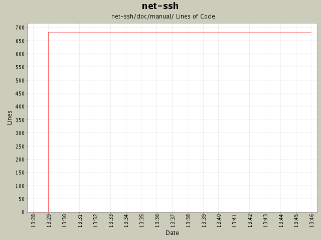

Summary Period: 2004-11-23 to 2004-11-23
[root]/net-ssh/doc/manual
 parts
(27 files, 620 lines)
parts
(27 files, 620 lines)

Total Lines Of Code:
681 (2005-01-07 15:12)
| Author | Changes | Lines of Code | Lines per Change |
|---|---|---|---|
| minam | 9 (100.0%) | 682 (100.0%) | 75.7 |
Changed FAQ link.
1 lines of code changed in:
Updated manual for new version.
681 lines of code changed in:
Generated by StatCVS 0.2.3